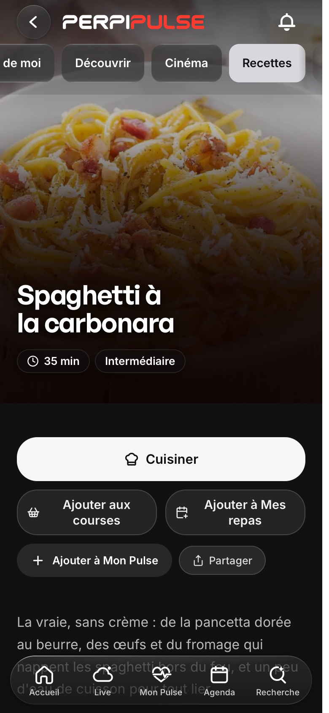
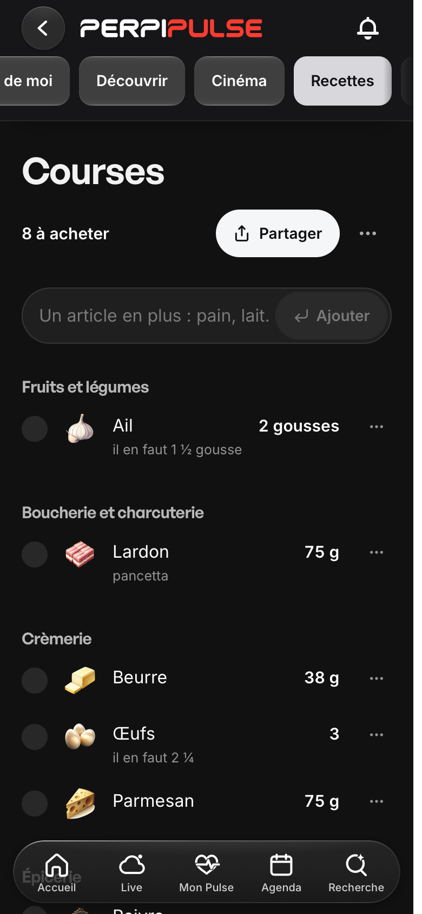
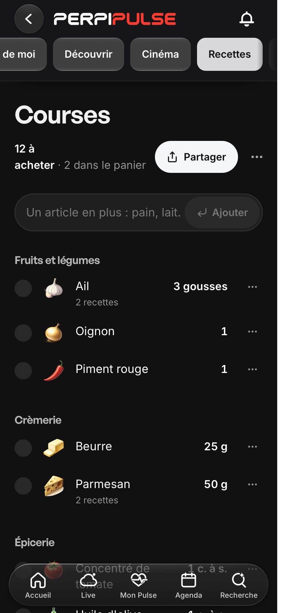
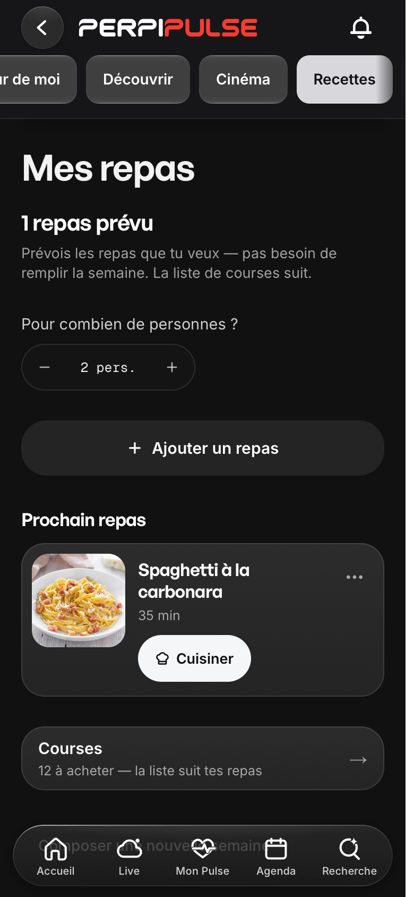
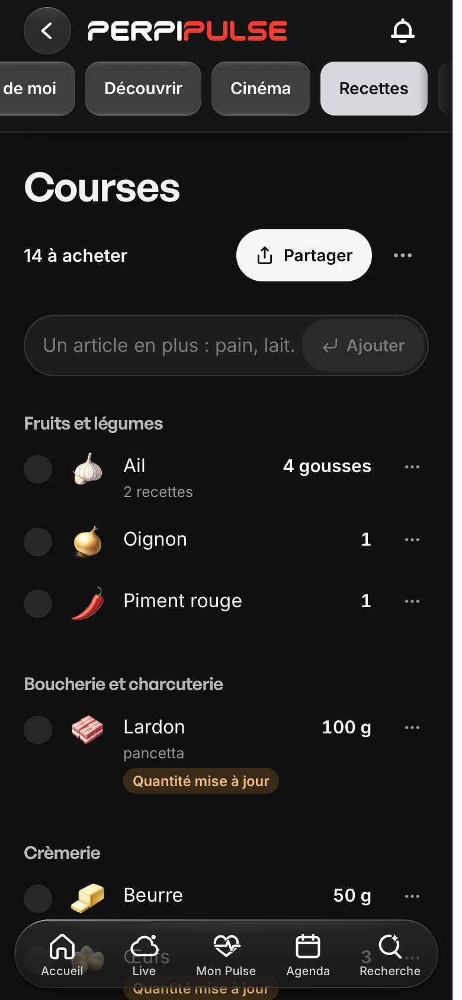
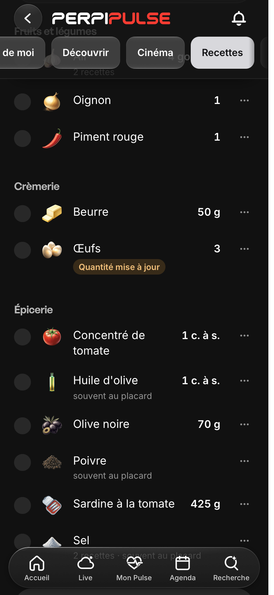
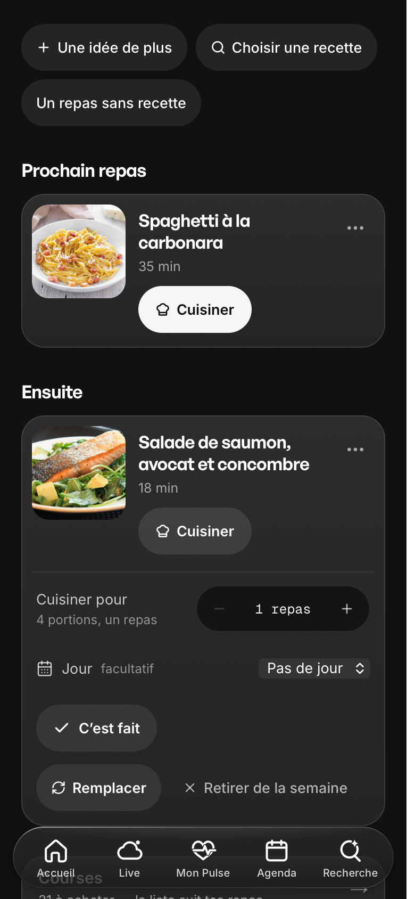
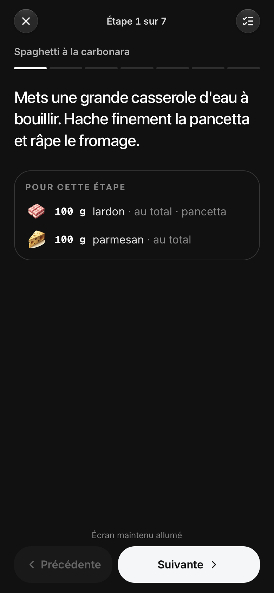
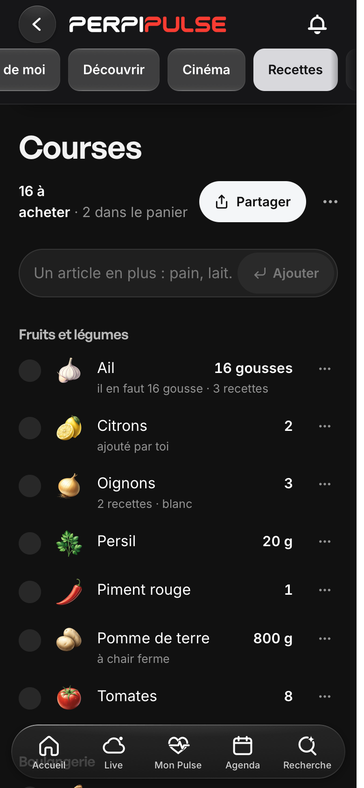
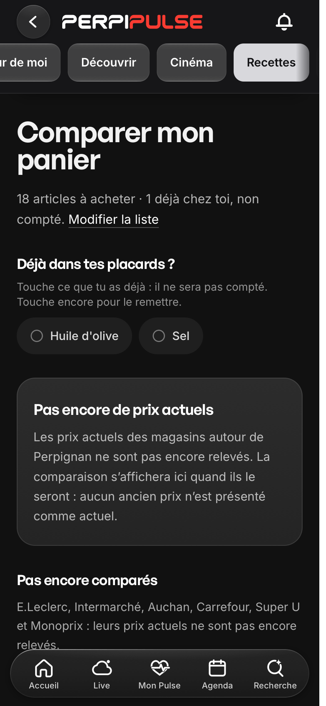

Recettes, Mes repas, Courses : le parcours en production
Captures de la vraie production, déploiement e877bba5, code a0ee0b540, le 3 novembre 2026, en 390 × 844, moteur WebKit de Playwright. Le même parcours passe aussi sous Chromium. Il n'a pas été fait sur un iPhone réel.
À refaire soi-même : la carbonara, Mes repas, Courses, le comparateur.
Ce qui est réel, figé ou fictif
| Élément | Nature |
|---|---|
| Recettes, quantités, photos, précisions | Réel : le catalogue publié (58 recettes). |
| Liste, repas, coches, placard | Gestes de test, joués par le banc dans un navigateur neuf, gardés sur l'appareil. Rien n'est écrit sur le serveur. |
| Prix | Aucun. La source n'est pas activée : ni clé, ni seau, ni tâche, ni abonnement. La route des prix répond 404. |
| Valeurs nutritionnelles | Estimation depuis la table Ciqual, inchangée sur la carbonara (623 kcal, identique avant et après). |
Le parcours

Portions réglées sur place, deux boutons : « Ajouter aux courses » répond dès le premier toucher, « Ajouter à Mes repas » est le nouveau nom.

Quantités à la portion, précision de la recette (pancetta), et la mention « il en faut 2 ¼ » conservée.

Lardon et œufs déjà cochés restent cochés, sans avis : il en faut moins (75 g → 50 g). Le « Dans le panier » garde ces lignes.

Le nouveau titre, le prochain repas, le lien vers Courses.

Deux personnes de plus : la ligne revient, et « Quantité mise à jour » le dit.

Le frais vaut pour cette liste, l'épicerie pour les suivantes. Un toucher remet la ligne.

Nombre de repas, jour facultatif, « C'est fait », remplacer, retirer avec « Annuler ».

Le guide reprend à son étape après un rechargement, et « Terminer » marque le repas fait.

Le stockage est identique octet pour octet avant et après le rechargement.

Aucun prix : la source n'est pas active. L'écran le dit, et le placard reste utilisable.
Les 36 contrôles du banc, en production
✓ fiche à 5 portions : la liste en garde 5 ✓ changer de portions met à jour, sans doublon ✓ le message dit « Courses mises à jour pour 3 portions » ✓ lardon à 3 portions, précision gardée : Lardon75 gpancetta ✓ la mention « il en faut 2 ¼ » reste sur les œufs ✓ rechargement : la coche reste ✓ l'ail des deux recettes tient en une ligne ✓ la ligne dit de quelles recettes elle vient ✓ CU-29 : besoin en baisse, la coche reste, sans avis (Lardon50 gpancetta) ✓ CU-29 : besoin en hausse, la ligne revient et le dit (Lardon100 gpancettaQuantité mise à jour) ✓ recochée, la ligne tient à la nouvelle quantité ✓ « Je l'ai déjà » sur l'épicerie : au placard ✓ rechargement : le placard tient ✓ « Je l'ai déjà » sur le frais : pour cette liste ✓ « Retirer » : la ligne quitte la liste ✓ « Remettre » : elle revient ✓ un article saisi entre dans son rayon ✓ le même article deux fois se refuse, et se dit ✓ « Annuler » rétablit les cochés sortis ✓ une recette quitte la liste ✓ « Annuler » la rétablit ✓ « Une idée de plus » ajoute un repas ✓ « un repas de plus » : 2 repas ✓ remplacé par tortilla-patatas ✓ retiré de la semaine ✓ « Annuler » rétablit le repas ✓ rechargement : la cuisine reprend à l'étape 3 ✓ « Terminer » marque le repas fait ✓ nouvelle semaine : le plan se referme ✓ « Annuler » rend le plan à l'identique ✓ liste vidée, après confirmation ✓ « Annuler » rend la liste ✓ rechargement : rien n'a bougé sur le disque ✓ le comparateur dit qu'il n'a pas encore de prix ✓ aucun prix à l'écran : la source n'est pas active ✓ aucune erreur de page ni d'hydratation (0) 36 contrôles verts, 0 rouges